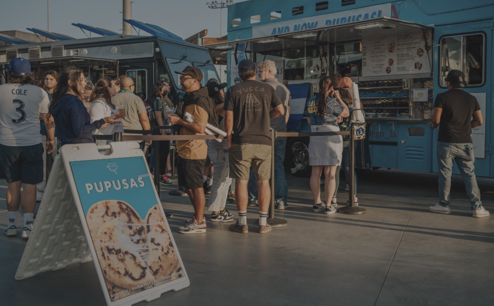
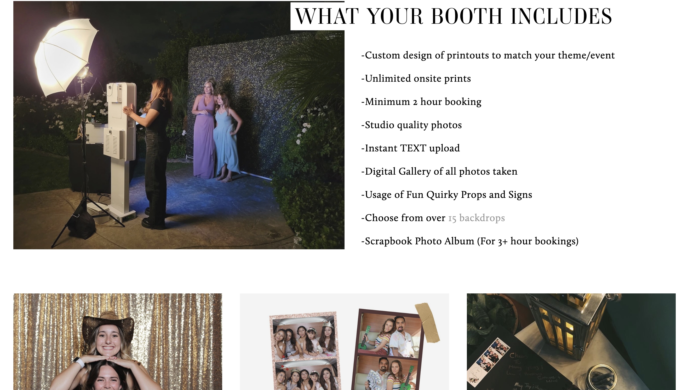
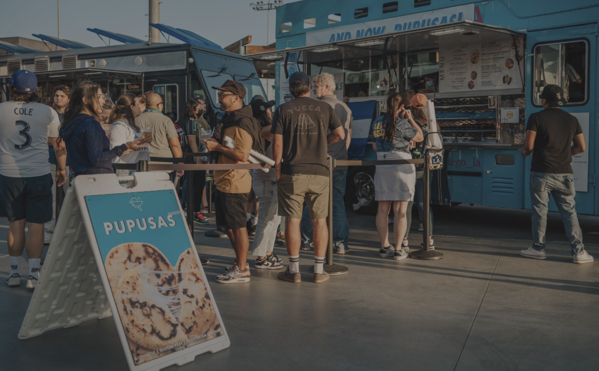
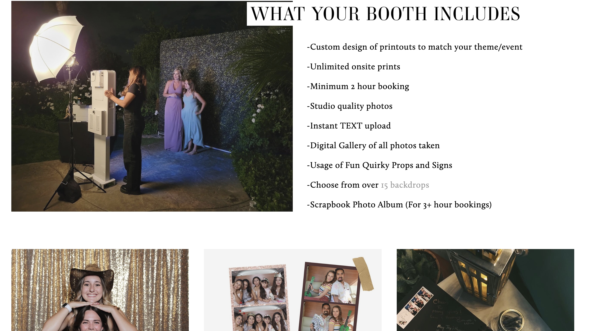

Genesis Salazar
Photobooth by Kelly is a business created by my eldest sister. She created this business to fund her college years but later on it would be used to fund my college years. I officially started working at my family’s photo booth business in 2017. In the beginning, I began by observing my older sister at booked events. As I grew accustomed to the setup I would work on the equipment, but was never allowed to communicate with the customers. Later on I would run the photo booth, but would have an adult with me at all times. Finally, at the age of 18 I was allowed to travel and run the booth by myself. I adore my job because I get to provide fun for anyone's celebratory day.
Addition to my job with the photo booth I have had numerous jobs. I am a hardworker and have never been fired. My first job, that wasn't given to me, was Waba Grill. On a daily basis, there were three workers, we would all cook, clean, prepare, and take orders. It was a high paced job that required me to be patient and fast. I unfortunately did have to quit after 5 months because I moved to the on campus dorms. During the school year, I felt that I needed a job that would help provide for my extra activities, so I took up a job at an event venue. I would prepare tables, create appetizers, serve dinner, and clean. This job was the most labor intensive, however I was able to have fun and learn about what is needed to have a successful party event. I never quit this job and I am allowed to work any days that I call ahead.
My third job was at a sushi restaurant. I unfortunately quit this job after a month because the drive was inconvenient. Here I was a hostess and would be the communication between cook and customer. Like Waba Grill this was a fast paced environment. I would prepare drinks, set tables, and communicate with customers (on the phone and in person). Lastly, I have worked in a food truck that is located in a soccer stadium. Soccer season has ended but will start again next year, so I am currently on break with this job. As I am the manager I typically start my day at 9 am. I pack all the necessary ingredients, cooking supplies, boxes, and drinks. When we arrived I began by taking orders and assisting with pouring drinks. My day is typically done at 10 pm or earlier if we sell out. This job taught me how to be organized, how to be in charge, and how to run a successful business. All in all I love all the places where I have worked and am currently working at, and I will continue to be hard working in any future job.
Experience
WabaGrill Worker
• Cashier: communicating with customers
• Prepares food: cutting, storing, and preping
• Cooking: cooking meats and rice
Photoboot Attendat
• Responsible for communicating withncustomers
• Setting up and running photobooth
Food Truck Manager
• Preparing the truck:loading and unloading
• Taking orders: communicating with customers
• Pouring drinks and cooking side dishes
• Ice runs when we run out
Education
University of California Riverside
Portfolio




 